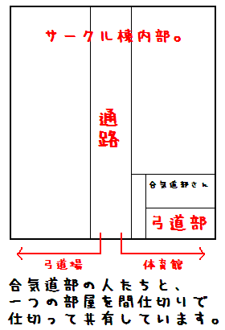

| 工学部 | |
|---|---|
| 篠原 生命 | 応用分子化学科2年 |
| アドレス | 50012252016(a t)tuat.ac.jp |

| 農学部 | |
|---|---|
| 安川 洋子 | 共同獣医学科2年 |
| アドレス | 50012156031(a t)tuat.ac.jp |

SPAM対策をしております。(a t)を@に変更して送信してくださいね。
| 4月8日 | 工学部サークルオリエンテーション | 新入生への説明 場所：BASE館横 |
|---|---|---|
| 4月10日 | 工学部公開練習＊ | 場所：工学部道場 時間：13:00〜 |
| 4月12日 | 農学部公開練習＊ | 場所：農学部道場 時間：16:30〜 |
| 4月13日 | 農学部サークルオリエンテーション | 新入生への説明 場所：武道場前 |
| 4月15日 | 農学部公開練習＊ | 場所：農学部道場 時間：16:30〜 |
| 4月17日 | 工学部公開練習＊ | 場所：工学部道場 時間：13:00〜 |
| 4月24日 | 新入生歓迎会 | 場所：農学部生協 |
| 工学部 | |
|---|---|
| 篠原 生命 | 応用分子化学科2年 |
| アドレス | 50012252016(a t)tuat.ac.jp |
| 農学部 | |
|---|---|
| 安川 洋子 | 共同獣医学科2年 |
| アドレス | 50012156031(a t)tuat.ac.jp |